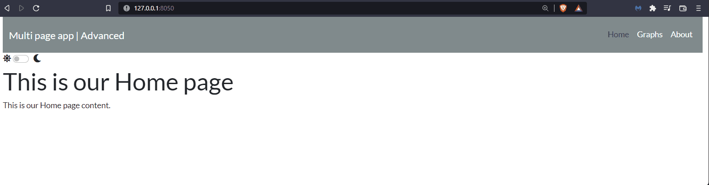
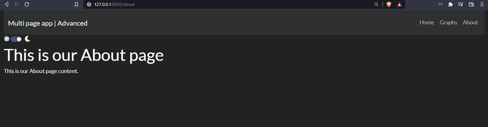
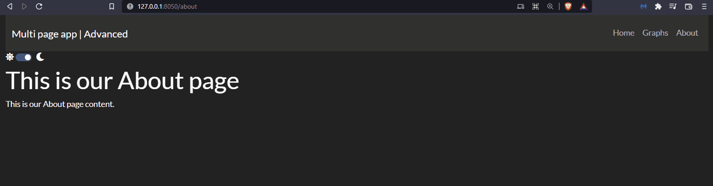
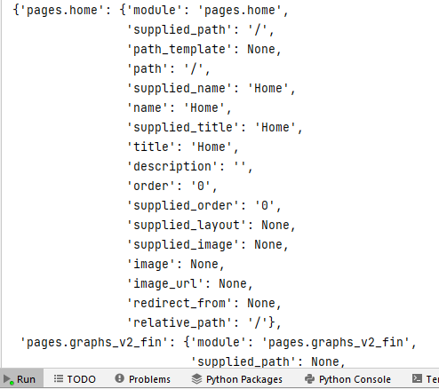
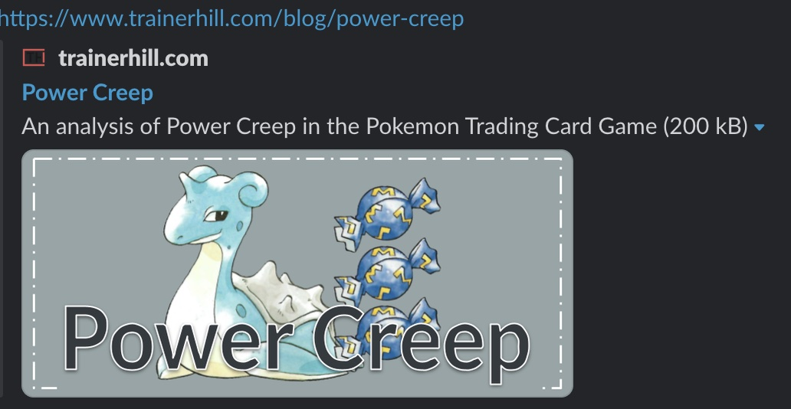
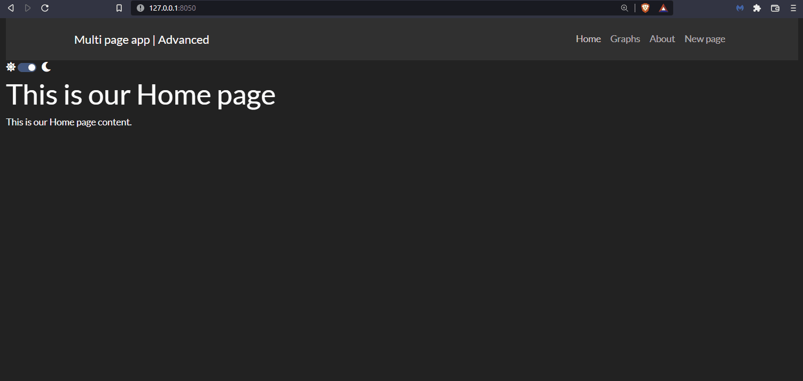
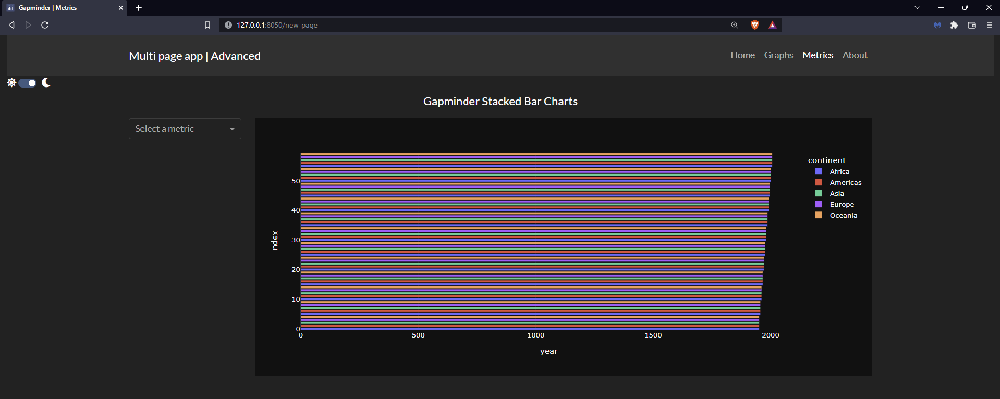

Chapter 15: Advanced Features of Multi-page Apps
Contents
Chapter 15: Advanced Features of Multi-page Apps¶
What you will learn¶
In this chapter we will cover more advanced features of Dash Pages, as we build a professional multi-page App.
Learning Intentions
Add a custom 404 page
Navigate the
page_registryCustomise order of pages, title and urls
Include meta tags
Switching app themes
By the end of this chapter, you’ll be able to build this app:

Click to download the complete code file for this chapter.
Attention
To run this app successfully, you will need to install the dash-bootstrap-templates and the dash-labs packages.
pip install dash-bootstrap-templates
pip install dash-labs
15.1 Default and Custom 404¶
Multi pages apps include, by default, a landing page whenever the user tries to reach an invalid URL. The default 404-page looks like the following: 
However, the 404-page can be customised. In order to do so, we created a new file named not_found_404.py inside the pages folder and add the desired layout content.
import dash
from dash import html
dash.register_page(__name__)
layout = html.Div(children=[
html.H1(children='Page not found'),
html.Div(children='''
This is a custom 404 page layout
'''),
])
Then, we add the below line of code to the app.py file to ensure that the 404 page does not appear as a link in the navbar, since we only want the Home, About, and Graphs pages on the navbar.
for page in dash.page_registry.values() if page["module"] != "pages.not_found_404"
Run the app and try to type a fake name in the url to see the custom-amde 404 page displayed:

15.2 Page registry¶
The dash_labs module has a function called print_registry() which allows to print the registry into the terminal to see the meta data of each registered page.
Un-hashtag the below line of code in the app.py file, and rerun your app.
print_registry(exclude="layout")
If you examine your terminal, you will see the following output (we’ve included the output only for the home page in the screenshot. The complete output includes the other pages):

As you can see, the registry stores a lot of information for each page, let’s focus on some properties (see the docs for the full list)
path: is the URL of the page. The path of the home page is always assigned a'/'. A multi page app must always be assigned a home page path.name: name of the link. If null, the app filename will be used. Not to be confused with__name__.order: the order of the pages in the app - commonly used when creating the page links in the app.py file (navlink and navbar in our case). If order of pages is not supplied, the page with path ‘/’ will receive order 0, then the remaining pages are sorted alphabetically.title: name of the page to be displayed in the browser tab. If null, the app filename will be used.descriptionandimageare extra properties that, if specified, allow the adding of meta information to our app URL when shared.imageshould contain the image filename located into theassetsfolder.
15.3 Multi-page order¶
By looking at the app we have so far, you’ll notice that the order of the links in the navbar are Home, Graphs, and About, from left to right. This is because we assigned the number 0 to the order property of the home.py file, the number 1 to the graphs_v2_fin.py file, and the number 2 to the about.py file. Had we chosen not to supply an order, the app would have displayed the pages in an alphabetical order: “Home” first because it’s the home page, “About” second, and “Graphs” third.
Here’s what the page registry looks like:
pages/home.py :
dash.register_page(__name__, path='/', order=0)pages/about.py :
dash.register_page(__name__, order=2)pages/graphs_v2_fin.py :
dash.register_page(__name__, order=1)
Get your feet wet and try to change the order of the home page so it appears last (far right) in the Navbar.
15.4 Names, titles, and URLs of pages¶
The graphs page of our app is represented by the file graphs_v2_fin.py. Dash will automatically assign the file name to the title, name and path properties of the page registry. However, in our case, we made the app look more professional by assigning new names and titles in the page registry.
pages/graphs_v2_fin.py :
dash.register_page(__name__, order=1, name='Graphs', title='Dash App | Graphs').
Notice that we did not modify the path property of the page registry. Consequently, the url of the graphs page will remain /graphs-v2-fin.
Now try this yourself: go into one of the pages and update the title and name properties with other values. Rerun the app and see how the text displayed in the navbar and the text displayed in the browser tab changes.
15.5 Updating the default pages directory¶
We can further customise a multipage app by renaming the folder which contains all pages. By default, the folder should be named pages; however, we can simply specify a custom folder name when instantiating our app if we prefer a different name.
Let’s suppose we chose to rename the folder with all the app’s pages to app sections instead of pages. After we do that, we need to assign the new folder name to the pages_folder property in the app.py file:
app = Dash(__name__, use_pages=True, pages_folder='app sections').
Note
When renaming the pages directory, all parts of the code that refer to the pages folder must be updated with the new name. An example of this is the code used in the app.py file to build the Navbar.
from:
for page in dash.page_registry.values() if page["module"] != "pages.not_found_404"to:
for page in dash.page_registry.values() if page["module"] != "app sections.not_found_404"
15.6 Meta tags¶
Meta tags allow a card to be displayed with a preview of our app when sharing the link to our app (for example, on Twitter, LinkedIn, Plotly Forum, etc.). For the web to automatically create a page preview, you would need to define the title, description and the image properties of the page registry.
To test this feature, we would need the app to be published; here’s an example of a published app, made by a Dash community member, which includes meta tags.

The meta tag properties within the Power Creep app are defined as such:
title= 'Power Creep'description= 'An analysis of Power Creep in the Pokemon Trading Card Game'image: an image placed in theassetsfolder of the app
So, coming back to our app, if you would like to create meta tags for the Graphs page, you would need to add the description and image properties to its page registry as such:
dash.register_page(__name__,
order=1,
name='Graphs',
title='Dash App | Graphs',
description='Graphs to visualize the gapminder dataset.',
image=graph_preview.png)
Make sure to create your desired image and place that file, graph_preview.png, in the assets folder.
15.7 App theme toggler¶
As a reminder, the app.py file is what brings all the pages together and finalizes the build of the multi page app. In our app, the layout is defined as a dbc.Container, which contains the header (navbar), the theme toggler, and the page_container that displays the content of each page.
This is the first time we’ve built and added a theme toggler to our app, which allows the switching between two themes. The theme toggler used is the ThemeSwitchAIO, which belongs to the ‘dash_bootstrap_templates’ library. We’ve picked two themes from dbc.themes: FLATLY and DARKLY (tipically you would choose a dark and a light theme). We’ve also added the sun and moon icons using the dbc.icons.FONT_AWESOME
Note that we’ve assiged dbc.icons.FONT_AWESOME, url_theme2 and dbc_css to the external_stylesheets of the app. The url_theme2 defines the default theme when the app first loads. The dbc.icons.FONT_AWESOME enables the usage of the font awesome icons.
Switching between Bootstrap themes in a Dash app will automatically style only the Dash Bootstrap components. However, it will not update the styling of any Dash Core Components or the Dash DataTable. By adding className="dbc" to the outer container of the app and assigning the dbc_css sheet to the external_stylesheets, the app will automatically style the Dash Core Components and the DataTable in accordance with the selected Bootstrap theme.
App file:
See the code
import dash
from dash import Dash, html
import dash_bootstrap_components as dbc
from dash_bootstrap_templates import ThemeSwitchAIO
from dash_labs import print_registry
# Configure Themes
url_theme1 = dbc.themes.FLATLY
url_theme2 = dbc.themes.DARKLY
theme_toggle = ThemeSwitchAIO(
aio_id="theme",
themes=[url_theme2, url_theme1],
icons={"left": "fa fa-sun", "right": "fa fa-moon"},
)
dbc_css = "https://cdn.jsdelivr.net/gh/AnnMarieW/dash-bootstrap-templates/dbc.min.css"
app = Dash(__name__, use_pages=True, external_stylesheets=[url_theme2, dbc_css, dbc.icons.FONT_AWESOME], pages_folder='pages')
# print_registry(exclude="layout")
header = dbc.NavbarSimple(
[
dbc.Nav([
dbc.NavLink(page["name"], href=page["path"])
for page in dash.page_registry.values() if page["module"] != "pages.not_found_404"
])
],
brand="Multi page app | Advanced",
brand_href='/',
dark=True,
color='dark'
)
app.layout = dbc.Container([header, theme_toggle, dash.page_container], className="dbc", fluid=True)
if __name__ == '__main__':
app.run_server(debug=False)
The impact of the dbc_class is not observable in our app. However, try to add a Dropdown to the graphs page:
layout = html.Div(children=[
html.H1(children='This is our Graphs page'),
dcc.Dropdown(['one','two','three']),
html.Div(children='''
This is our Graphs page content.
'''),
])
Relaunch the app and notice how the background color of the dropdown options updates as you toggle between the light and dark theme.
Exercises¶
(1) Using the app we’ve built in this chapter, add a new page with the following features:
The new page file should be named
new_page.pyThe content of the page should be the app developed in the exercise 2 from chapter 8
Tip: remember how the layout and the callback are defined inside a multi page app; remember to register the page instead of instatiating Dash
See Solution
This is how the new_page.py should look like. Place this file inside the app sections folder (the remaining App files do not require any change).
from dash import Dash, dcc, Output, Input, callback
import dash
import pandas as pd
import plotly.express as px
import dash_bootstrap_components as dbc
# data
df = px.data.gapminder()
df = df.groupby(['year','continent']).agg({'pop':'sum', 'gdpPercap':'mean','lifeExp':'mean'}).reset_index()
# Dash App
dash.register_page(__name__)
# Create app components
title_ = dcc.Markdown(children='Gapminder Stacked Bar Charts', style={'textAlign': 'center','fontSize': 20})
dropdown_ = dcc.Dropdown(id='metric-dropdown', placeholder = 'Select a metric',
options= [{'label': 'Population', 'value': 'pop'},
{'label': 'GDP per capita', 'value': 'gdpPercap'},
{'label': 'Life Expectancy', 'value': 'lifeExp'}])
graph_ = dcc.Graph(id='figure1')
# App Layout
layout = dbc.Container(
[
dbc.Row([dbc.Col([title_], width=12)]),
dbc.Row(
[
dbc.Col([dropdown_], width=2),
dbc.Col([graph_], width=10),
]
)
]
)
# Callbacks
@callback(
Output('figure1','figure'),
Input('metric-dropdown', 'value')
)
def update_markdown(metric_):
fig = px.bar(df, x='year', y=metric_, color='continent', template='plotly_dark')
return fig

(2) Building on exercise 1, make the following adjustments to the newly added page:
Update the order of the
new_page.py: make it the third linked page in the navbar, afterGraphs.Update the name of the new page to:
MetricsUpdate the title of the new page to:
Gapminder | Metrics
See Solution
To slove this exercise, we just need to update the dash.register_page() statements of the following files:
new_page.pyshould be registered as:dash.register_page(__name__, order=2, name='Metrics', title='Gapminder | Metrics')about.pyshould be registered as:dash.register_page(__name__, order=3)

Summary¶
In this chapter, we have gone through several advanced features specific to multi page apps. There are additional functionalities and examples that can be found in the Dash Pages section of the Dash documentation.
This concludes the section dedicated to multi page apps.